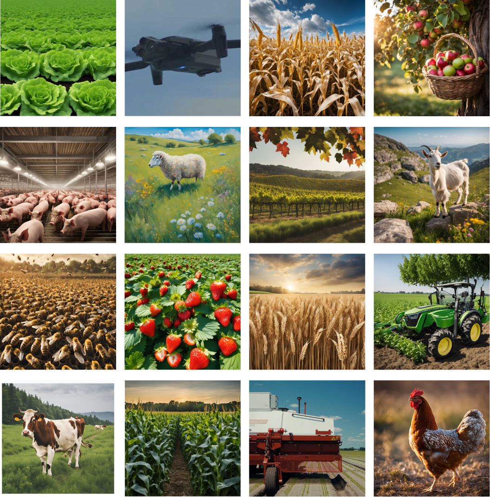
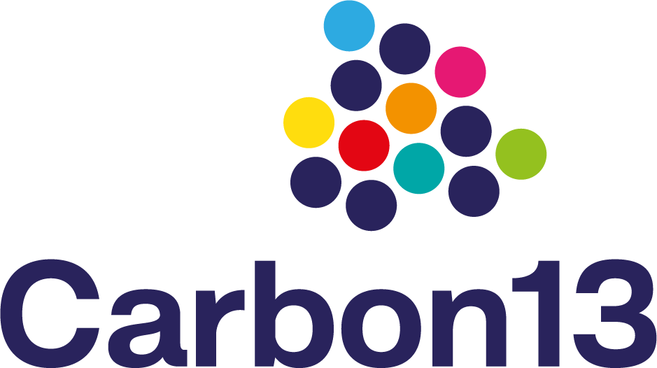
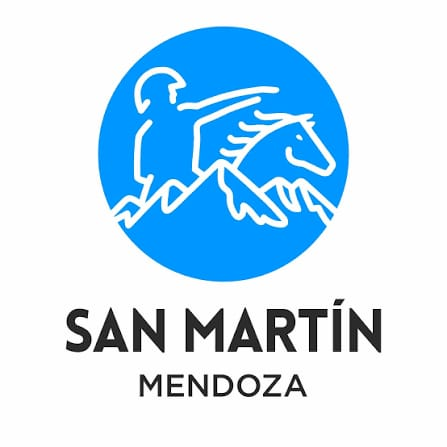

Vitto helps agricultural organizations and agribusinesses identify what works and scale it across their farmer networks, faster and with less risk.
Request a demo
Thousands of agritech solutions exist.
But very few move beyond early adoption.
Agricultural organizations struggle to:
Result: Innovation stays slow, underused, and fragmented.
This means missed ROI, lost revenue opportunities, and underperforming farmer programs.
From innovation scouting to scaled implementation.
Vitto helps you unlock solutions that deliver economic, environmental, and social value and scale them across your network.
Find relevant, high-impact solutions
Use real-world data to reduce risk
Deploy solutions where they are most likely to succeed
From first signal to full deployment, on one platform.
Scale the use of proven high-impact solutions across your farmers
Capture value across three dimensions: economic, environmental, and social
Reduce failed pilots and wasted investment
Strengthen member engagement and retention
Capture needs across your network
Match with relevant solutions
Validate what works
Scale across the right farmers
Track impact and ROI
We reduce friction at every step, from need to scale.
Access Vitto's platform and decision-support tools to identify, validate, and scale high-impact solutions across your farmer network.
Vitto focuses on high-impact innovation across three areas:
Improve productivity, reduce costs, and strengthen resilience
Support transition to more sustainable and climate-resilient practices
Unlock new revenue streams (bioeconomy, carbon, market innovation)
See how Vitto can scale solutions across your network
Request a demoVitto AgTech is an impact-driven startup, launched in 2024, founded by two co-founders with 30 years of experience in R&D, innovation, and sustainability, Vitto AgTech is committed to accelerating the adoption of sustainable innovations, ensuring farmers remain safe and competitive.

